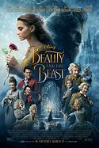

BEAUTY AND THE BEAST
SUMMARY
The story starts with the beautiful, young girl who lived with her father (wealthy merchant), two sisters and brothers in a good, immensely rich surrounding. After the unfortunate turn of the events her father lost all of his money, so they were forced to move into a much smaller house in the countryside. Her sisters were desperate by the turn of the situation and the fact that they are now poor, but Beauty (the youngest of them all, who was named for her beautiful appearance) maintained her sadness to herself doing everything she can to make their lives easier. She wanted to help her father by doing all the chores around the house. Locals often said that they felt sorry for Beauty and her destiny while her sisters deserved such fate, considering how spoiled they were while the family was rich. One day, her father discovered that there’s a small chance they can get their fortune back. One of his ships with all of his goods had happily sailed into the port, but he’ll need to go away for some time. He asked them what they want him to bring. Both sisters started demanding expensive gifts and gorgeous gowns while Beauty only wanted for her father to return to their home safely. He insisted that she tells him what she wants and she asked for a single red rose, a flower not often seen in their area. When he arrived at the port, he was told that he was not entitled to the goods, and he headed back home as poor as he was when he left. Along the way, he lost himself in the woods and came across the light coming from afar. He came closer and realized it was a lighted castle. It was snowing outside and he decided to take a short rest finding shelter in the castle. He walked in and saw a dinner table served. He hesitated briefly, but soon, he took a piece of chicken. He was very hungry. After drinking a glass of wine, he was feeling sleepy so he looked for a place where he can rest. While walking through the castle, he came across a room with a comfortable bed, so he decided to sleep there. The next morning, he was surprised to see his clothes freshly washed and folded by the bed, as well as hot chocolate greeted him at the table. He thought that the good fairies had taken care of him, so he thanked them aloud. After drinking the hot chocolate, he headed to the stable to pick up the horse he had left there. On his way, he suddenly saw red roses in the castle garden and remembered that Beauty asked him to bring her a red rose. He snapped off the twig and heard a loud crack. At first, he was scared, and when he saw an ugly beast in front of him, he almost fainted. The Beast told him that he’s not happy with the fact he had cut the roses in his garden and that he might lose his life. The merchant begged him to forgive him for doing so and said that roses are for his daughter. The Beast then demanded that one of his daughters should be sacrificed for his mistake. The merchant was not pleased to hear this and made a promise that he would give his life if none of his daughters appears in his castle within three months. The Beast allowed him to leave. On his return home, he told his children what had happened to him and told Beauty that her rose will cost him dearly. She said that it is out of the question that the father will sacrifice his life for her sake and that she’s the one that will go to the castle. However, they both went to the castle to confront the Beast, which made her sisters especially happy because they thought that they would finally get rid of Beauty. At the castle, they were greeted by a table served with a plentiful dinner. Then the Beast appeared before them, standing in the shadows and asked if the dinner was delicious. The Beast asked Beauty if she came to the castle willingly or if it was her father who forced her to come. She affirmed that it was her idea of coming. The Beast, then, said that the merchant must leave the castle tomorrow morning, and that Beauty must stay here, with him. The merchant said he would still like to stay in the castle with her, but Beauty immediately rejected his idea. After they went to rest, Beauty saw a good fairy in her sleep, telling her that she was pleased with her behavior. For this, she will be rewarded. In the morning, Beauty told her father about her dream, which comforted him a little. After a short time they said goodbye to each other, and the merchant, groaning for his daughter’s destiny, left the castle. After his departure, Beauty prayed and went on a tour of the castle. She reached to the room that had “Beauty’s chambers” written on the door. As soon as she stepped inside, she was amazed by the magnificence of the room. There were a bookcase and a piano with notes. She was glad to see the wardrobe and noticed that one book carried a note with gold letters: “Demand whatever you want, command: you are a queen and a mistress here!”. She just wanted to see her father. She looked in the magic mirror where she saw a scene showing her father on his way home. She was thinking that the Beast was good to her and that she had no reason to fear it. During dinner, the Beast came to talk to Beauty. They talked about his ugly appearance, but also his wit and good heart. Then, Beauty realized that there was no malice in such an ugly beast. He demanded that she enjoys the splendor of the court because it greatly pleases him. At the end of the conversation, the Beast surprised Beauty by asking her about marriage. She couldn’t say “yes” because she considered him only a good friend. From that day on, the Beast made her company every night and had always asked the same question. Beauty was sorry to reject the Beast, but she did not want him to live in the wrong belief. She explained that their marriage would probably never happen. He asked her to promise that she will never leave the castle. Still, Beauty couldn’t promise it because she wanted to see her father, who had fallen ill, again. The beast allowed her to visit him, with her promise that she would return to the castle after eight days. The next morning, Beauty found herself in her father’s house and was overjoyed when she finally hugged him. The maid brought to her the clothes the Beast had sent, and Beauty dressed the most modest one. When the sisters saw her, they could not hide their intense jealousy. They came up with a plan to get rid of her forever. They played kindness and affection, all to persuade her to stay in her father’s house for more than eight days. So it was, and on the tenth day, Beauty felt guilty for not keeping her promise. She remembered the Beast and the sadness that would overwhelm him if she did not return. That night, she dreamed of the Beast dying in the garden in front of the castle because of her ungratefulness. Beauty woke up crying from her sleep and thought she was an evil person because of what she did to the Beast. She realized how much goodness there was in him and decided to go back to the castle. She left her ring on the table and went to bed again and fell asleep. The next morning, she woke up in the castle and immediately went in search of the Beast. She couldn’t find him anywhere, and then she remembered her dream. She ran to the garden and saw the Beast lying on the ground. She quickly hugged him and went to fetch some water from a nearby stream and poured water in his mouth. The Beast soon came to its senses. He wanted to take his life because of her unfulfilled promise. Then, Beauty told him that she will marry him because she realized that she has deep feelings for him. That moment, the Beast was gone and it was the prince who was standing in front of her. She asked him where the Beast had disappeared, and the prince explained to her that he was bewitched and that he was under a spell that he will not show his true appearance until he finds the love of his life. He explained to her that only she had noticed his goodness and had agreed to marry him, making the spells disappear. The two headed for the castle where all of her family welcomed them, and, at that moment, the fairy turned to her and said she would become queen. That was her reward. She turned her sisters into stone statues until they changed their minds and become more humble, but she doubted they would even understand where they had gone wrong and said that they would probably remain that way forever. Beauty and the Beast, now beautiful prince, lived happily ever after and enjoyed a love based on the kindness of their hearts. Characters: the beauty, her family, and the beast Characters Analysis Beauty – a good girl named after her immense beauty. She loved her father more than anyone in the world and did not want anything bad to happen to him. When he told her the story of his encounter with the Beast, she agreed to sacrifice her life for him. The father then realized how much goodness was in her heart, but still could not allow her to do so. Beauty is a person with a great heart, and although the sisters hated her, she had nothing but love for them. She also showed love for the Beast when she realized that she was living with someone who was a good friend to her. In addition to taking good care of her, the Beast entertained her every day during dinner, so they were able to get to know each other even better. When she broke her promise, she realized that she loves him. She didn’t care about his outward appearance because she would probably stay with him even if he was ugly. The Beast – a vicious king who was convinced that true love exists with a spell that will disappear the moment he meets a girl who would agree to marry him for his goodness. As a Beast, he was ugly and not overly smart, so he didn’t know if Beauty would be able to recognize his inner goodness. He entertained her every night, which contributed to their relationship and ultimately resulted in her falling in love with him. The Beast did his best to make the life of Beauty in the court pleasant. He told her that she was the mistress of the castle, but it was not clear to her why he asked her about marriage every night. Of course, his wish was to turn her into a queen. After a while, their love did not disappear but became even bigger and stronger. A good fairy rewarded them and gave them a happy life in the kingdom. Jeanne-Marie Leprince de Beaumont Biography Jeanne-Marie Leprince de Beaumont was a French author best known for her version of “The Beauty and the Beast"She was born in 1711 in Rouen and died in 1780. After her mother passed away when Jeanne was only eleven, she and her sisters were tutored by two wealthy women who later on enrolled them into a convent school in Ernemont in Rouen. Subsequently, Jeanne became a singing teacher. She was married two times, once to the dancer Antoine Malter and the second time for Grimard de Beaumont. In 1748 she went to London where she wrote fairytales amongst which was “The Beauty and the Beast”. Jeanne left England in 1763 with her daughter Elisabeth. Jeanne was in a relationship with the French spy Thomas Pichon which landed her a character in the novel “Crossings”. Except for fairy tales. she wrote novels such as “The Triumph of Truth” and instructional handbook for parents and educator called Magasins. Her other works are: “Prince Darling”, “Prince Charming”, “The Widow and her Two Daughters”, “The Tale of the Three Wishes .